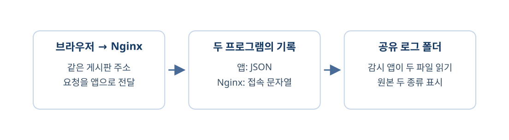

기록의 출처는 그 기록을 남긴 곳이다. 정규화는 서로 다른 필드 이름을 공통 이름으로 맞추는 일이며, 없던 사실을 채우는 일이 아니다.
이번에는 실제 HTTP의 역할을 떠올리며 명시된 교육용 HTTP·오류·감사 자료를 비교하자. 공통 기록을 읽되 출처·시각·원본의 의미를 보존한다. 발생 시각은 원래 행동이나 오류가 일어난 때이고, 수신 시각은 감시 서비스가 자료를 받은 때이다.

그림의 입력 자료에서 비교 기준을 거쳐 확인할 결과로 읽어 보자.
- 수신 시각과 발생 시각을 구분한다.
- Sentry 오류와 계정 감사 자료를 구분한다.
- 수집·조사·대응에서 현재 기능의 역할을 설명한다.
1단계. 같은 사건처럼 보이는 기록을 구분하기
첫 그림의 세 자료는 교육용으로 만든 예제다. HTTP 예제는 요청의 방법·경로·상태, Sentry 예제는 앱 오류, 감사 예제는 계정의 행동을 기록한다. Sentry는 앱 오류를 모아 확인하는 도구다. 오류 500을 보았다는 사실은 계정 침해를 확인했다는 뜻이 아니다.
| 자료 | 이 예제가 알려 주는 것 | 이것만으로 모르는 것 |
|---|---|---|
| HTTP h1 | 요청 한 건이 500으로 끝남 | 예외의 내부 원인 |
| Sentry s1 | ZeroDivisionError 발생 | 계정이 탈취됐는지 |
| 감사 a1 | 예제 계정의 로그인 실패 | 반복 행동이나 이후 성공 여부 |
먼저 예상하기
- h1과 s1에서 같은 요청인지 확인할 값을 찾는다.
- a1을 h1과 같은 사건으로 바로 묶을 수 있는지 판단한다.
판단과 해설
h1과 s1의 demo-r42는 교육용으로 맞춰 둔 요청 식별자다. 실제 HTTP 시작 코드에는 이 필드가 저장되지 않으므로 실제 Sentry 이슈와 한 요청으로 확정할 수 없다. a1에는 같은 요청 식별자가 없고 자료의 의미도 다르다. 시각이 비슷하다는 사실만으로 같은 사건이라고 연결하지 않는다.
2단계. 시각과 사용자 이름의 뜻을 남기기
발생 시각은 원래 행동이나 오류가 일어난 때이고, 수신 시각은 감시 서비스가 자료를 받은 때이다. 전송이 늦거나 실패하면 두 시각은 같지 않을 수 있다. 현재 실제 HTTP의 occurred_at은 감시 DB가 기록을 저장한 수신 시각이다. 교육용 감사 JSON의 at은 예제 행동의 발생 시각이므로 같은 필드 이름으로 맞춰도 뜻을 표시한다.
HTTP 실제 기록: source=http_live / 시각 의미=감시DB 수신
감사 교육 자료: source=audit_demo / 시각 의미=예제 발생같은 사용자를 연결하려면 이름이 비슷한지가 아니라 확인된 대응 관계가 필요하다. 준비된 actor-map.json은 교육용 user-17과 mira@example.test가 employee-17이라는 관계를 명시한다.
| 원본 이름 | 공통 사용자 | 근거 |
|---|---|---|
| user-17 | employee-17 | 교육용 대응표 |
| mira@example.test | employee-17 | 같은 대응표 |
| unknown-user | 없음 | 대응 관계 미확인 |
사용자 연결 판단하기
- user-17과 mira@example.test의 대응표를 확인한다.
- unknown-user를 IP가 같다는 이유로 employee-17이라고 채워도 되는지 판단한다.
판단과 해설
앞의 두 이름은 준비된 대응표에 근거가 있다. unknown-user는 근거가 없으므로 연결할 사용자가 없다는 값으로 남긴다.
3단계. 준비된 코드로 정규화 결과 확인하기
파일 읽기와 대응표 적용은 준비 코드다. 이번에는 날짜 파서나 DB 연결을 새로 작성하지 않고 변환 전후의 의미를 확인한다. 입력 JSON과 사용자 대응표는 monitor/backend/learning/data 폴더에 있다. 이 폴더의 http-example.json·sentry-example.json·audit-raw.json·actor-map.json을 비교한다. VS Code에서 monitor/backend/learning/lesson2.py를 열어 입력과 출력 부분을 읽는다. 실행은 앞에서 동작시킨 같은 저장소의 Windows CMD 터미널에서 한다. monitor/backend/learning/lesson2.py — 준비된 실행 파일
from learning.support import read_json, normalize_audit
raw = read_json("audit-raw.json")[0]
event = normalize_audit(raw)
print(raw["person"], "->", event["actor"])
print("원본ID", raw["id"], "공통ID", event["id"])
print(event["source"], event["kind"], event["occurred_at"])
http = read_json("http-example.json")
sentry = read_json("sentry-example.json")
print(http["request_id"], sentry["request_id"])
print(http["status_code"], sentry["exception"])
Windows CMD
docker compose -f compose-monitor.yaml exec monitor-api python -m learning.lesson2user-17 -> employee-17
원본ID a1 공통ID a1
audit_demo login_failure 2026-10-14T00:00:00Z
demo-r42 demo-r42
500 ZeroDivisionErrorpython -m learning.lesson2는 learning 폴더의 해당 실습을 실행한다. 코드는 감시 API 컨테이너에서 실행되므로 호스트 PC에 새 Python 패키지를 설치하지 않는다. 결과에서 근거 찾기
- 출력의 원본 ID와 공통ID가 같은 a1인지, 출처가 audit_demo인지 확인한다.
- 출력의 500과 ZeroDivisionError가 서로 무엇을 설명하는지 말한다.
해설
500은 HTTP 처리 결과이고 ZeroDivisionError는 예제 오류 종류다. 공통 필드로 옮겨도 원본과 출처를 남겨야 뒤에서 판정 근거를 다시 확인할 수 있다.
4단계. SIEM·XDR·SOAR의 역할 연결하기
SIEM(Security Information and Event Management)은 보안 기록을 모아 조회하고 분석하는 역할을 가진 시스템이다. 우리의 기록 수집·저장·조회와 규칙 적용을 이 역할에 대응시켜 볼 수 있다. XDR(Extended Detection and Response)은 기기·계정·클라우드 등 여러 영역의 탐지 정보를 연결해 조사와 대응을 돕는 범주이다. 자료를 한 표에 올렸다는 사실만으로 우리 예제가 완전한 XDR 제품이 되는 것은 아니다. SOAR(Security Orchestration, Automation and Response)은 여러 도구의 대응 절차를 연결하고 반복 작업을 자동화하는 범주이다. 지금의 근거 확인과 뒤에서 다룰 사건·사람 승인·조치·복구를 구분해 생각하자.
| 역할 | 현재 배우는 부분 | 아직 더 필요한 부분 |
|---|---|---|
| SIEM | 출처를 남겨 수집·정규화·규칙 적용 | 더 많은 수집원·운영 기능 |
| XDR | 여러 종류 근거의 관계를 설명 | 영역 간 확인된 식별자와 실제 연동 |
| SOAR | 판단 근거를 다음 대응 입력으로 준비 | 사건·승인·실제 조치·복구 |
우리 기능의 위치 말하기
- 기록 불러오기와 근거 표시가 어느 역할에 가까운지 설명한다.
- 아직 승인·조치하지 않은 결과를 대응 완료라고 불러도 되는지 판단한다.
해설
수집·조회·분석은 SIEM 역할에 가깝다. 실제 조치가 없는 현재 결과는 대응 완료가 아니며 후보의 근거를 읽는 단계다.
챙겨 가기 — 기록을 합치기 전에 확인하기
| 가져갈 개념 | 판단할 때 할 일 |
|---|---|
| 출처 | 실제 기록과 교육용 자료를 구분한다. |
| 정규화 | 이름을 맞추되 시각·식별자·없는 값을 보존한다. |
| 도구 역할 | 수집·조사·대응을 나눠 현재 기능의 범위를 설명한다. |
다음에는 이 공통 기록에서 같은 조건으로 조회 횟수를 비교한다. 사용자 정보가 없는 실제 HTTP에는 사용자별 침해 규칙을 억지로 적용하지 않는다.
확인문제
확인문제 1. 정규화할 때 필드 이름이 같아지면 뜻도 같아졌는가?
정답과 해설
아니다. 수신 시각과 발생 시각처럼 이름을 맞춰도 원래 뜻과 출처를 표시해야 한다.
확인문제 2. 실제 HTTP의 occurred_at은 지금 무엇을 뜻하는가?
정답과 해설
감시 DB에 저장한 수신 시각이다. 일반 앱에서 행동이 발생한 시각을 직접 받은 필드가 아니다.
확인문제 3. 현재 HTTP에 없는 사용자와 IP를 추측해 채워도 되는가?
정답과 해설
안 된다. 확인하지 못한 값은 없는 상태로 남겨야 잘못된 사용자 연결을 피한다.
확인문제 4. Sentry 오류500 자료만으로 계정 침해를 확정할 수 있는가?
정답과 해설
없다. 오류 관찰과 계정 행동 감사는 의미가 다르며 침해 판단에 다른 근거가 필요하다.
확인문제 5. 교육용 h1과 s1을 같은 요청으로 비교할 근거는 무엇인가?
정답과 해설
두 예제에 맞춰 둔 demo-r42 요청 식별자다. 시각만 비슷해서 연결한 것이 아니다.
확인문제 6. 교육용 연결 예제가 현재 실제 HTTP와 Sentry의 연결 성공을 증명하는가?
정답과 해설
아니다. 실제 시작 코드에는 요청 식별자가 저장되지 않는다. 제공 예제와 실제 연동을 구분한다.
확인문제 7. user-17과 mira@example.test가 같은 사용자인 이유는 무엇인가?
정답과 해설
준비된 교육용 대응표에서 둘을 employee-17로 확인해 두었기 때문이다. 이름이나 IP를 추측한 것이 아니다.
확인문제 8. unknown-user의 IP가 같으면 employee-17로 정규화하는가?
정답과 해설
아니다. 대응 관계를 확인하지 못했으므로 공통 사용자 값이 없는 상태로 남긴다.
확인문제 9. 기록 수집·조회·규칙 적용은 어떤 역할에 가까운가?
정답과 해설
SIEM의 수집·분석 역할에 가깝다. 예제가 상용 제품의 모든 기능을 구현했다는 뜻은 아니다.
확인문제 10. 현재 후보 표시가 SOAR 대응 완료와 다른 이유는 무엇인가?
정답과 해설
아직 사건 검토·승인·실제 조치·복구 절차를 수행하지 않았다. 분석 결과가 그 다음 절차의 입력이 되는 것이다.
되새김 문제
다음 질문에 말로 답할 수 있으면 이번 시간을 제대로 이해한 것이다.
- 수신 시각과 발생 시각을 같은 뜻으로 비교하면 어떤 문제가 생기는가?
- Sentry 오류와 계정 감사 기록은 어떤 사실을 각각 알려 주는가?
- 우리 기능은 수집·조사·대응 중 어디까지 동작하고 있는가?
다음 활동에서도 출처와 비교 기준을 확인하며 근거를 읽어 보자.